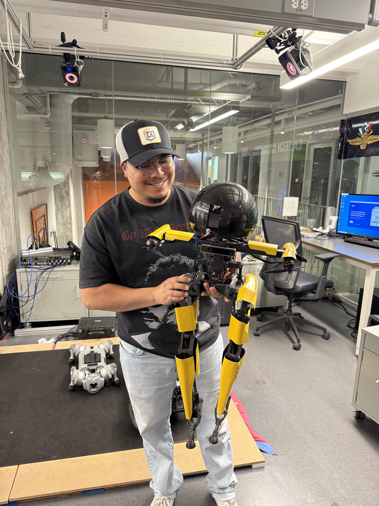

GEORGIA INSTITUTE OF TECHNOLOGY · COMPUTER ENGINEERING
Edwin Ulysses Diaz

Building software that
brings hardware to life.
I'm a computer engineering student and Marine Corps veteran interested
in embedded software, real-time systems, and technology that senses,
computes, and acts in the physical world.
01 / BACKGROUND
About me
My path to engineering began with service in the United States Marine
Corps, where I developed an appreciation for accountability, teamwork,
and solving problems under pressure. Today, I am pursuing computer
engineering at Georgia Tech and building a foundation in software
and electronics.
What excites me most about embedded systems is the connection between
code and the physical world. I want to understand how low-level
software, sensors, processors, and real-time decisions come together
to make useful machines work. I am especially interested in robotics,
autonomous systems, and dependable embedded devices.
Outside the classroom, I value collaboration and hands-on learning.
My goal is to contribute to engineering teams where I can learn from
others, take ownership of meaningful work, and help build complete
products.
02 / SELECTED WORK
Technical projects
01 MCU / DATA ACQUISITION
PSoC Real-Time Data Acquisition
Developing a microcontroller-based system using a PSoC 5LP board
and joystick input. The project explores analog sensing,
hardware integration, and firmware development.
PSoC 5LP · Embedded C · ADC · Hardware
Discovery Project — feature in progress
02 SIGNAL PROCESSING
Python Radar Simulator
Implemented a radar range-equation simulation to investigate
how received power and signal-to-noise ratio change with
target distance. Produced plots to visualize the results.
Python · NumPy · Matplotlib · Radar
03 RADIO FREQUENCY
Software-Defined Radio Exploration
Explored radio-frequency reception with an RTL-SDR receiver
and a Raspberry Pi-based setup, gaining hands-on exposure
to signal capture and radio tools.
RTL-SDR · Raspberry Pi · RF
Project documentation, original photographs, diagrams, code links,
and final Discovery Project results will be added as the work progresses.
03 / DIRECTION
Career goals & ECE roadmap
My long-term goal is to become an embedded software engineer who
develops the low-level software that enables physical systems to
operate reliably. I am particularly drawn to robotics, sensors,
real-time operating systems, and embedded Linux.
Now — Foundations
Strengthen C/C++, digital systems, computer architecture,
and core electrical and computer engineering concepts.
Continue building and documenting hands-on projects.
Next — Practical experience
Participate in a collaborative engineering project team,
pursue a software or embedded systems internship,
and practice debugging with real hardware.
Long term — Engineering impact
Design and deliver embedded software for products that
connect computation with the physical world, while
continuing to grow in systems design and technical leadership.
04 / TOOLKIT
Skills & experience
Technical interests & experience
Python, C/C++ learning, Raspberry Pi, PSoC 5LP,
microcontrollers, breadboarding, basic analog inputs,
Git, radar simulation, and software-defined radio.
Leadership & collaboration
United States Marine Corps service, veterans' community
leadership, robotics club leadership, peer support,
and collaborative technical projects.
This section distinguishes tools I have used from skills I am
actively developing. I will update it as I gain experience.
05 / CREDENTIALS
Resume
My resume highlights my education, leadership,
military service, and engineering projects.
View / download resume ↗
Before publishing, add your actual resume as
assets/resume.pdf.